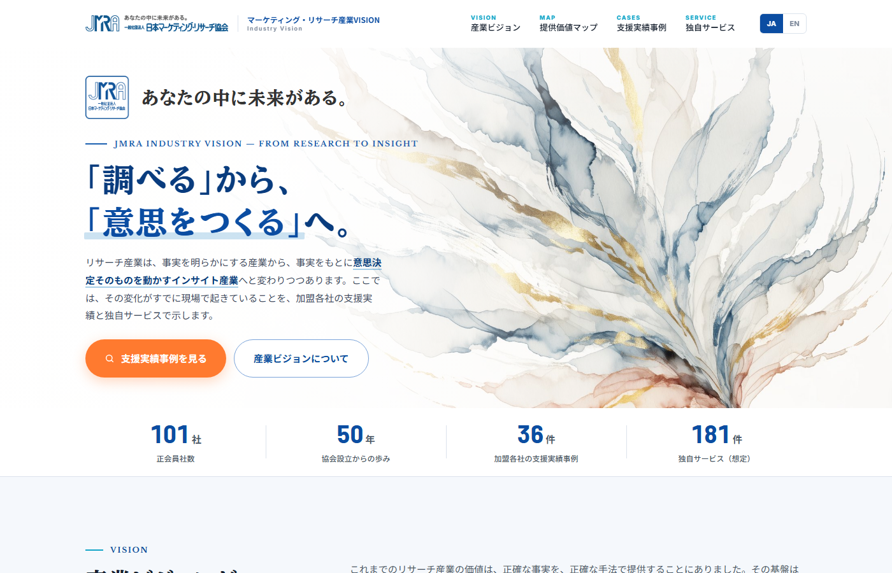
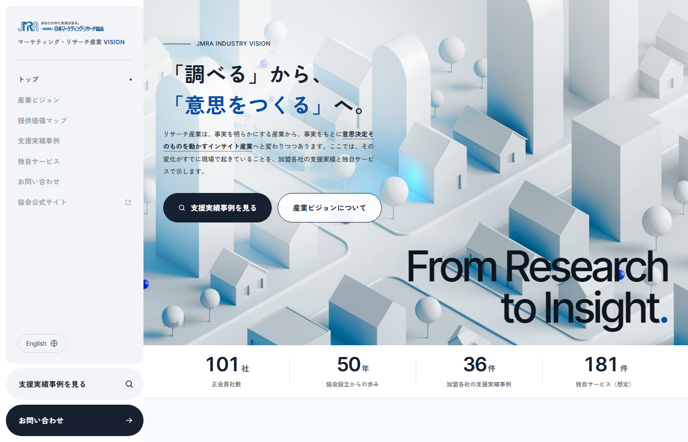

CONFIDENTIAL
一般社団法人 日本マーケティング・リサーチ協会 様
産業ビジョンLP ご提案
ご案内した合言葉をご入力ください。
次回からは自動で開きます。
合言葉が分からない場合は、担当（株式会社インフォネット）までお問い合わせください。
ご案内した合言葉をご入力ください。
次回からは自動で開きます。
ご検討いただいた過去のデザイン案です。デザイン案B（可能性が、ひらく）での進行が決定したため、ご提案一覧のトップからは外し、こちらに保管しています。いつでもご覧いただけます。
いずれも実際に動くHTMLです。構成・カテゴリ体系・会員企業での絞り込みはデザイン案Bと共通で、配色と世界観、ナビゲーションの置き方が異なります。

水彩の抽象ビジュアル×明朝見出しの端正なトーン。ひとつの点から形が右上へ開いていく絵で、データ表現を使わずに「可能性の広がり」を表す方向。見出しは BIZ UDPMincho、英字は Libre Baskerville（参考: techv.co.jp）。紺 #0B4DA2 を基準色に、協会としての信頼感を保った王道案です。

左固定のグローバルナビ＋大きな欧文タイポ。ナビを左のパネルに常設し、見ているセクションをドットで示す構成（参考: rgf-professional.jp）。濃色セクションではパネルが黒に反転、ボタンは文字がスライドする動きつき。内容・データはデザイン案Bと同一で、モノトーン×JMRAブルーで構成しています。
メインビジュアルの方向性を比較した資料です。デザイン案Bのメインビジュアルを選定いただくまでの経緯としてご参照いただけます。
MV案A（水彩の抽象）／MV案B（可能性が、ひらく）／MV案C（ストック画像枠）を並べ、印象・読みやすさ・汎用性・留意点を比較した資料です。テキスト文字数の目安表も掲載しています。